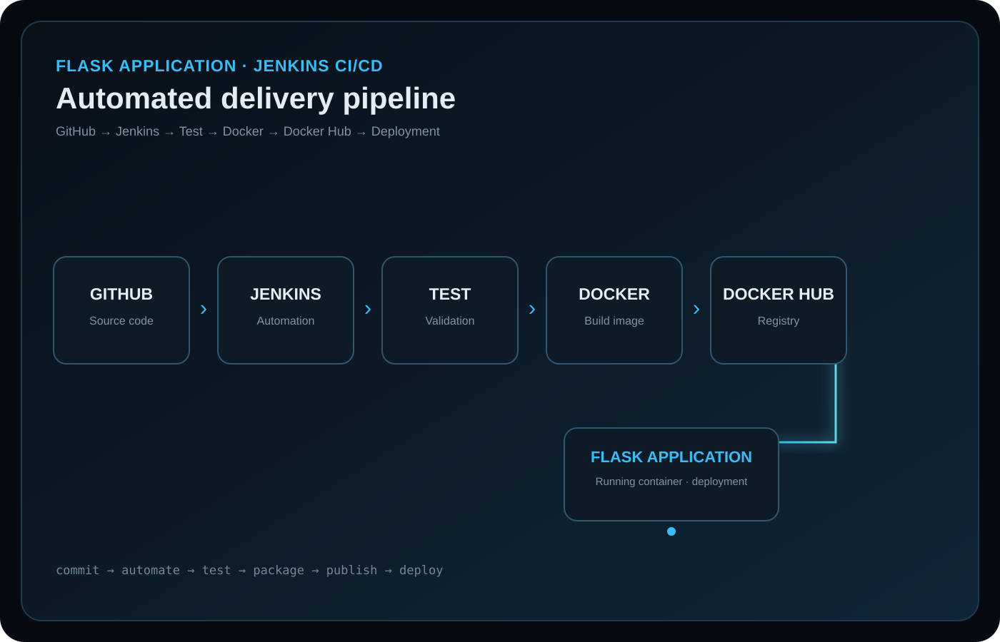
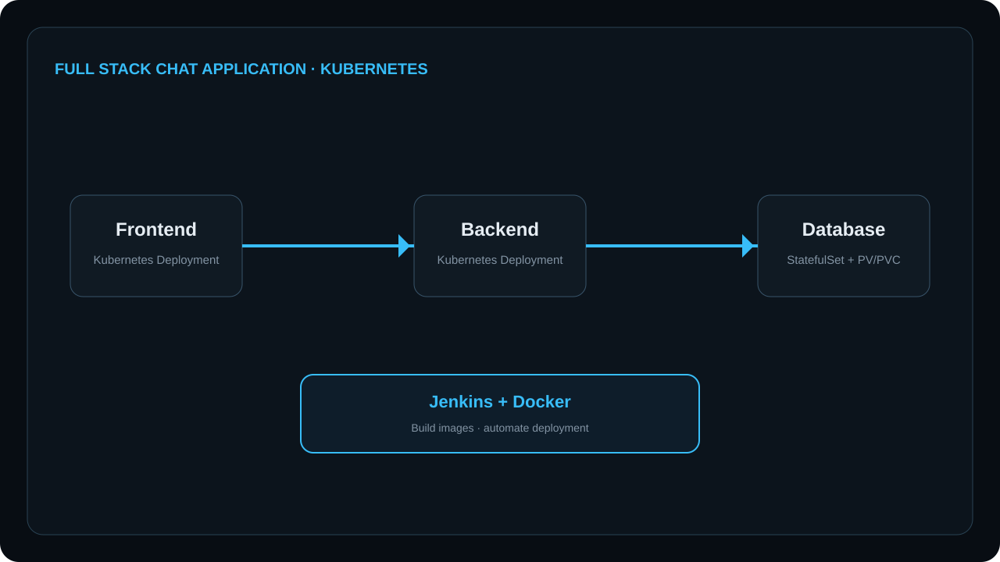

Open case study ↗PROJECT 01 · CI/CD
Flask Application — Jenkins CI/CD Pipeline
Built a CI/CD pipeline that automates application testing, Docker image creation, Docker Hub publishing and deployment.
Explore Project →Open to Fresher DevOps / Cloud Roles
Building practical experience with Linux, AWS, containers, CI/CD, Kubernetes and automation — one project at a time.
satnam@devops:~$ whoami
Fresher DevOps Engineer
satnam@devops:~$ stack
Linux · AWS · Docker · Kubernetes
Jenkins · Git · Terraform · Ansible
satnam@devops:~$ ./deploy.sh
✓ pipeline completed successfully
satnam@devops:~$
01 — ABOUT ME
I am a BCA graduate building my career in DevOps and Cloud engineering through hands-on projects and practical infrastructure work.
I work with Linux, AWS, Git, Docker, Kubernetes and CI/CD tools, while continuing to strengthen infrastructure automation and monitoring skills.
I enjoy understanding how code moves from a repository into a running, observable environment — and troubleshooting each layer when something breaks.
02 — SKILLS
Administration, permissions, processes, storage and networking fundamentals.
EC2, VPC, S3, IAM, ECR, EKS, EBS and Security Groups.
Version control, branches, merges, remotes and collaborative workflows.
Images, containers, Dockerfiles, registries and deployment workflows.
Pods, Deployments, Services, ConfigMaps and cluster fundamentals.
Pipeline automation for build, test, containerization and deployment.
Basic-to-intermediate pipeline concepts and automated workflows.
Infrastructure as Code and repeatable infrastructure provisioning.
Configuration management and server automation fundamentals.
Prometheus metrics and Grafana dashboards for observability.
03 — DEVOPS WORKFLOW
A practical delivery workflow connecting source control, automation, containers, deployment and observability.
Source
Test & Build
Package
Store
Deploy
Observe
04 — ARCHITECTURE
Code, branches and collaboration.
Automated validation and delivery workflows.
Portable application packaging.
Container scheduling and service exposure.
Repeatable provisioning and configuration.
Metrics, dashboards and operational visibility.
05 — PROJECTS
Three hands-on DevOps projects covering CI/CD automation, Kubernetes deployment and AWS cloud deployment. Each project keeps its own thumbnail and opens a dedicated case study.

Open case study ↗PROJECT 01 · CI/CD
Built a CI/CD pipeline that automates application testing, Docker image creation, Docker Hub publishing and deployment.
Explore Project →
Open case study ↗PROJECT 02 · KUBERNETES
Deployed a full-stack chat application with separate frontend and backend Deployments, a database StatefulSet and persistent storage.
Explore Project → Open case study ↗
Open case study ↗
PROJECT 03 · AWS
Containerized a Python application, automated image creation with Jenkins, pushed the image to Amazon ECR and deployed it on Amazon EKS.
Explore Project →06 — EDUCATION
Bachelor of Computer Applications · (August 2022 – June 2025)
07 — CONTACT
I am looking for my first opportunity as a DevOps or Cloud Engineer and am open to discussing infrastructure, automation and cloud-native work.
Get In Touch